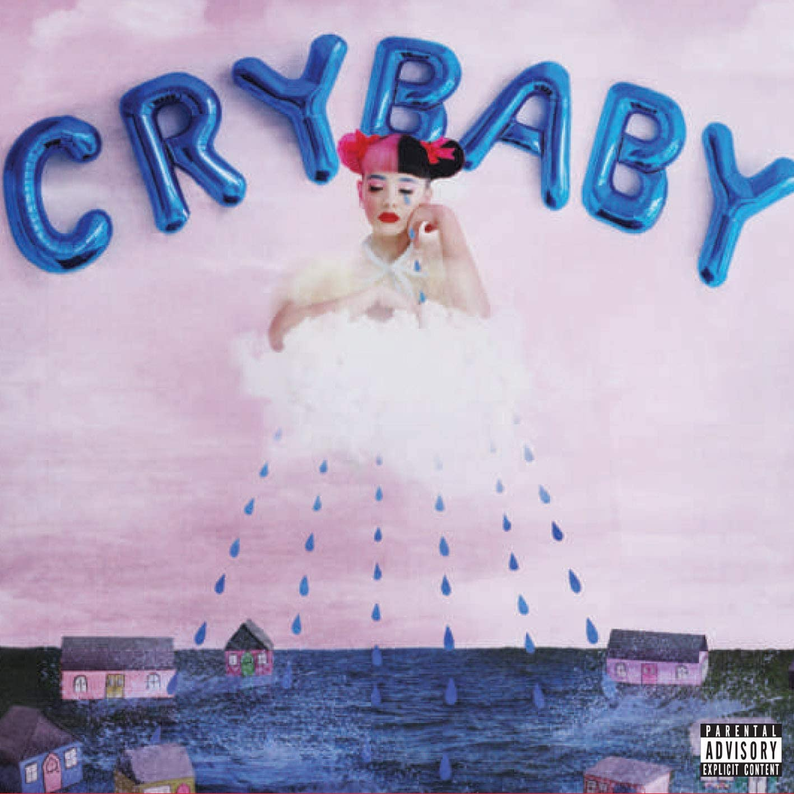
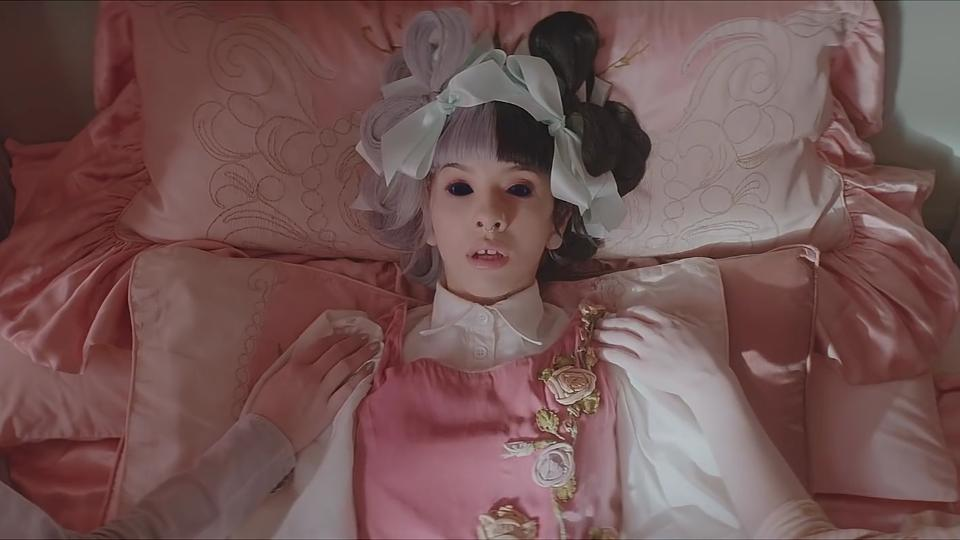
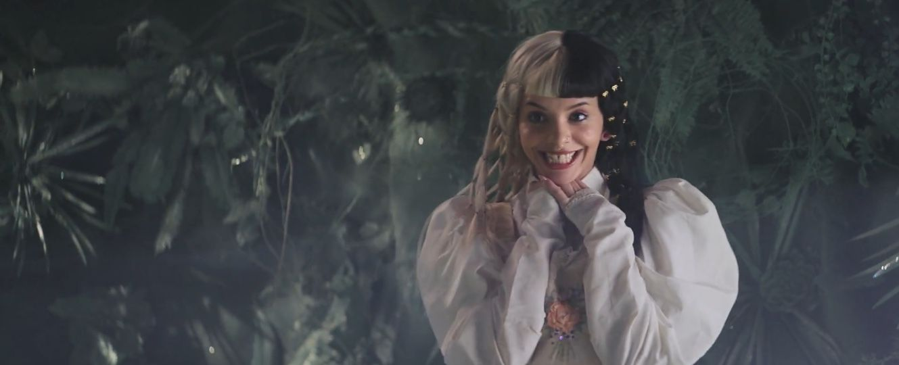
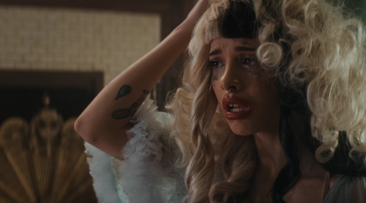

Martinez começou a escrever canções para o álbum no começo e final de 2013. Martinez comentou que a sua composição, logo após a temporada que fez no The Voice, "mudou, com certeza. "Eu costumava me inspirar escrevendo com um violão. Não consigo mais tocar violão acústico, só guitarra. Agora sou mais focada em conceitos". la compôs a obra toda com o grupo Kinetics & One Love, em Nova Iorque; eles escreveram músicas primeiramente no seu projeto Dollhouse, no qual a cantora descreveu como "bom para caramba, porque eles estavam abertos a experimentar sons de brinquedos por horas, e assistir filmes do Tim Burton nas nossas sessões, antes de escrevermos". No entanto, a cantora fez o disco com outros produtores e escritores, como Kara DioGuardi. Ela comentou que trabalhar com DioGuardi "foi realmente incrível", e também disse estar "ansiosa para trabalhar com ela no futuro". Sobre a seleção de músicas para seu álbum, a cantora afirmou que "havia músicas que eu definitivamente queria no álbum e lá estavam algumas músicas que eram muito semelhantes, por isso depende do conceito e se um conceito foi mais forte do que o outro".
COMPOSIÇÃO
Cry Baby tem letras contando histórias em cada faixa e é conceitual, algo que não esteve em seu primeiro trabalho Dollhouse, com Martinez descrevendo o projeto como "uma maneira de superar minhas inseguranças em muitas áreas da minha vida". A cantora afirmou que o disco fala sobre a vida de Cry Baby, uma personagem a qual a mesma inventou e descreveu como "vulnerável, insegura e muito emocional, ela começa então, a crescer como pessoa e aprender com suas experiências". O conteúdo lírico do álbum apresenta principalmente temas como críticas sociais, relacionamentos e convivência.
Cry Baby
A faixa de abertura auto-intitulada do álbum, "Cry Baby", possui instrumentação fundida de choros e risadas de bebês reais. A canção é sobre pessoas, incluindo Melanie, que são extremamente sensíveis e tendem a ser desencadeadas facilmente, o que, consequentemente, termina em lágrimas
Dollhouse
Segunda faixa do álbum, e primeiro single do extended play de mesmo nome, "Dollhouse" é sobre uma família que parece ser perfeita olhando para fora, ainda que esteja longe disso.
Sippy Cup
A continuação do clipe da faixa é "Sippy Cup", terceira canção do álbum, o qual se descobre o que realmente acontece na cozinha, o assassinato de seu pai juntamente de sua amante pelas mãos da prórpia mÂe de Cry Baby
Carousel
É uma canção que fala sobre estar perseguindo alguém que nunca vai retribuir o seu amor. Em entrevista a Billboard, Martinez disse que a canção "é sobre eu estar apaixonada por alguém e estar vivendo tudo de novo".
Alphabet Boy
A quinta faixa, "Alphabet Boy", tem um tema adulto utilizando temas infantis como uma metáfora, como na parte "Sempre mirando aviões de papel em mim quando você está por perto".Neste caso, existem brinquedos associados com crianças pequenas, tais como aviões de papel.
Soap
A bubblegum bass "Soap", escolhida por Martinez como a qual "ninguém pode realmente se relacionar", fala sobre pessoas que se sentiram muito medo de dizer como se sentiam, assim, 'lavaram sua boca com sabão'.
Training Wheels
A balada "Training Wheels", sétima faixa de Cry Baby, foi resenhada para o Portal It Pop! como "a entrega do relacionamento, e como nos privamos de coisas em favor a relação, o que inevitavelmente nos deixa vulneráveis"
Pity Party
"Pity Party", uma faixa descrita por Martinez como "mais pop" e composta por Christopher J. Baran e Kara DioGuardi, foi o primeiro single do álbum. Segundo Martinez, a inspiração para fazer a letra da faixa foi a concepção de "ninguém aparecer para minha festa de aniversário".
Tag, You're It
"Tag, You're It", outra faixa pop, fala sobre abuso e pedofilia. O mesmo site que resenhou "Training Wheels", disse que as letras da música são "pesadas" e também que "ela deixa tudo estranho quando canta de forma quase transtornada".
Milk And Cookies
A décima faixa do disco, "Milk and Cookies", é uma continuação da nona faixa. No qual ela escapa do "Lobo-Mau", fazendo uma metafora como se ela tivesse se libertados de seus abusadores
Pacidy Her
"Pacify Her" conta como ela rouba o namorado de uma garota que ela odeia, afirmando nos versos "Garoto cansado anda pelo meu caminho / Segurando a mão de uma garota / Aquela vadia básica finalmente vai embora / Agora eu posso tomar o homem dela".
Mrs. Potato Head
"Mrs. Potato Head" tem como questão a cirurgia plástica, e como você pode se arrepender tentando se fazer em algo que não é. Martinez falou que a inspiração para a escrita foi bonecos, dizendo que "por um longo tempo, todo o visual que eu tinha em minha cabeça era o fato de que você pode puxar peças da face dos brinquedos, e que poderia representar a cirurgia plástica"
Mad Hatter
Última faixa do albúm, "Mad Hatter" tem o assunto sendo sobre a personagem Cry Baby "abraçar sua loucura ao invés de questioná-la".
Play Date, Cake e Teddy Bear - Deluxe
Primeira faixa da edição deluxe, "Play Date" fala sobre a arquétipa Cry Baby se sentindo como nada mais do que um amigo para alguém que parece se importar muito pouco com ela, mesmo que eles se reúnam com bastante frequência. A canção tem uma metáfora sexual, como nos primeiros versos "Estamos apenas brincando de pique-esconde / Está ficando difícil de respirar embaixo dos lençóis com você".Melanie mencionou "Teddy Bear" em uma entrevista, sendo sobre um urso de pelúcia tentando a matar, fazendo uma metáfora sobre relacionamentos abusivos, no qual tudo sempre começa como uma grande maravilha e no final um total pesadelo. Última faixa da deluxe, "Cake" tem o assunto sendo uma relação entre alimentos doces e a relação sexual, respectivamente.